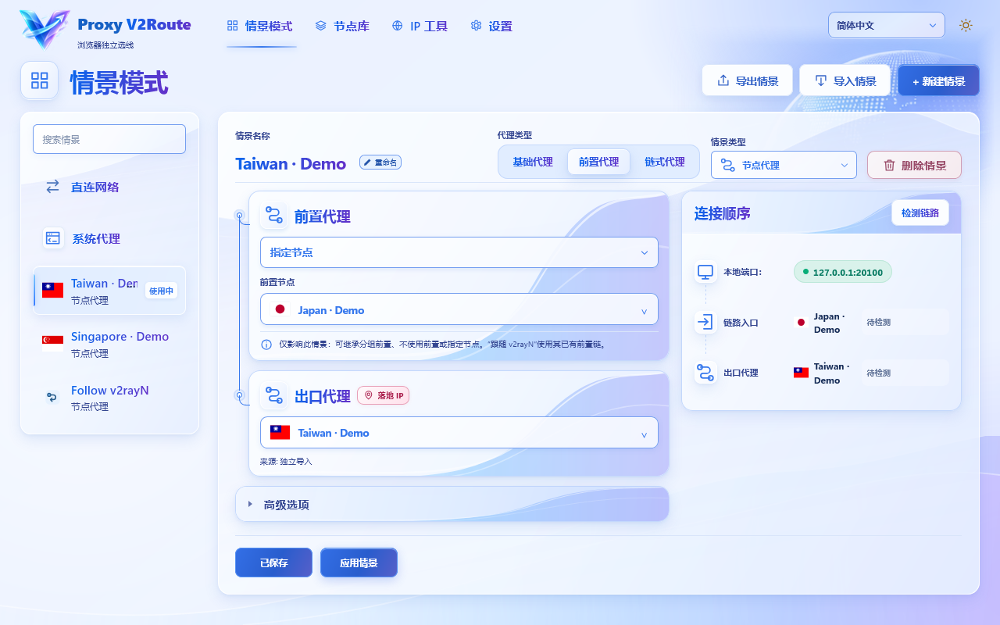

情景与分流规则
设置默认线路，为指定域名、IP 或 IP:端口选择代理。「保存」记录修改；「应用情景」保存并立即切换浏览器线路。
为浏览器单独选择代理线路，集中管理情景、节点与连接检测，无需切换 v2rayN 主线路。
Windows 10/11 x64 Chrome 120+ Firefox 140+

设置默认线路，为指定域名、IP 或 IP:端口选择代理。「保存」记录修改；「应用情景」保存并立即切换浏览器线路。
导入节点与订阅，按分组整理和搜索。可定时更新订阅，并选择代理优先、失败后直连。
基础、前置和链式代理分别保存配置。按连接顺序检测延迟，随时停止检测。应用情景后启用所选线路。
支持单节点与分组测速，查看出口 IP、HTTP 延迟和下载上传速度，并使用 Ping、TCPing、MTR 与网站连通检测。
示意 · 导入节点线路
直连网络、系统代理与跟随 v2rayN 按各自模式连接。
Windows 10/11 x64 · .NET Framework 4.5.2+
Windows 安装器未作代码签名。
Chrome 应用商店 或 Firefox 附加组件商店，选择对应浏览器安装。
节点线路必须配合 Windows 组件使用。安装器已含 Python、Xray 与网络诊断，为当前 Windows 用户安装并注册。
在设置中检查组件连接，导入自己的节点或读取 v2rayN 节点，再创建并应用情景。
遇到问题？请附上版本、浏览器与复现步骤，并从附件中移除节点凭据、订阅令牌和个人信息。
提交问题 ↗不必。Windows 配套组件已含 Xray 和网络诊断。只有读取 v2rayN 节点或使用「跟随 v2rayN」时才需要它。
不会。它检查配套组件连接及随包核心的完整性。「安装/修复」恢复随包版本；更新核心需安装新版配套组件。
可以。当前商店版本为 Chrome 1.2.74、Firefox 1.2.74，Windows 配套组件为 1.2.74。扩展与组件分别更新。
节点账密和线路设置保存在本机，不上传给开发者。网络工具会访问对应服务商；打开弹窗或 IP 工作区会进行 ipify 出口 IP 检测。导出的情景备份包含凭据且未加密。完整行为请查阅隐私说明。
隐私与数据处理不一定，也可能是检测服务、浏览器限制或前序链路导致。链路检测可帮助定位失败的位置；网站有响应只表示可达，不代表账号可用或地区解锁。